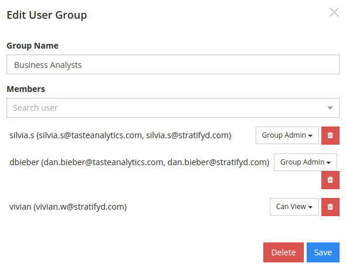

Administration¶
Implementing Signals¶
A Cloud Deployment is our most common method of deployment. Among other services, Amazon Web Services S3 and EC2 are used to provide an optimal experience in computing and visualization.
Contact us for information on Virtual Private Cloud or On-Premise deployments.

User Groups¶
Group management can be done from the Groups page on the main nav bar.
Setting the permission of each individual in a group sets a cap on the maximum level of permission that the user can hold on anything shared to the group.
In this group, I’ve given Silvia Group Admin permission, and Vivian Can View permission.
If I share a dashboard with Can Edit permission to this group, Vivian still only gets Can View permission, and Silvia will get the Can Edit permission.

The permission levels in the group also dictate what actions members can take within the group.
Can View can access things shared to the group, but cannot share to the group
Can Edit can share to the group, but cannot invite new members
Admin can invite others, but only give them Can Edit permission
Group Admin can invite others and give them equal privilege (Group Admin)
Warning
If you make someone else a Group Admin of your group, they can remove you from the group.
Permission Levels¶
Permissions on any asset (dashboard, stopword list, taxonomy, etc.) are set by the creator of that object.
Can View can view and use the asset but cannot permanently modify it
Can Edit can view and modify the asset, but cannot share it with others
Can Share can edit and share the asset with others, but cannot remove others’ access
Owner can edit, share, and create or remove other owners
Warning
If you make someone else an Owner of your dashboard (or other asset), they can modify your privileges to that asset.